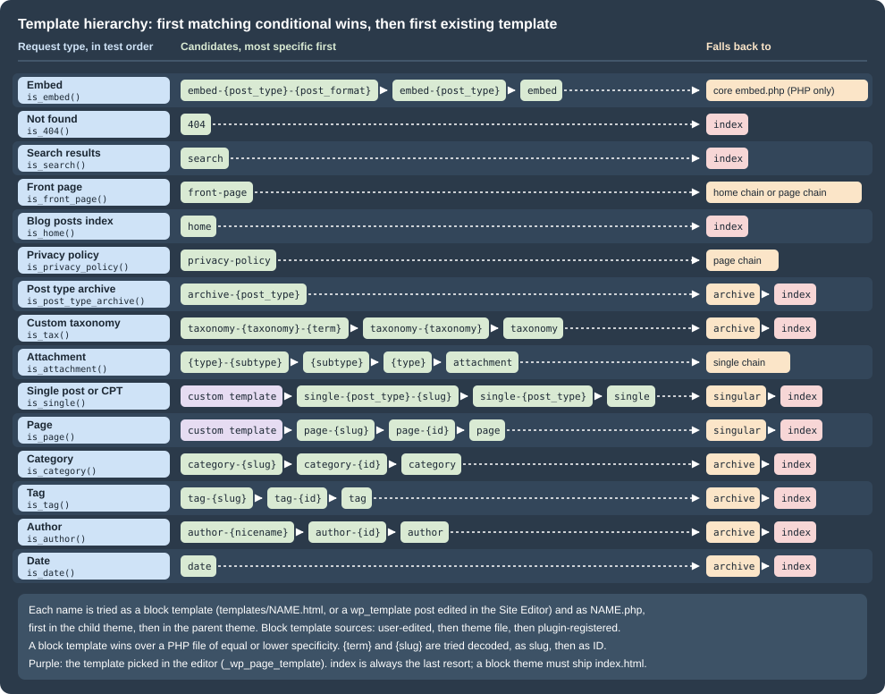

Template Hierarchy
|
This content was generated with the assistance of AI and should be verified against the official documentation before being relied on in production. |
Every front-end request ends with WordPress picking one template to render it: the file (or block template) that
draws a single book, the blog index, a genre archive or the "not found" page. The template hierarchy is the rule
that makes that choice. For each kind of request it lists candidate template names from the most specific (this one
book) to the most generic (any single post), takes the first one that exists, and falls back to index when nothing
else matches. The same rule serves block themes, whose templates are templates/*.html files or templates edited in
the Site Editor, and classic themes, whose templates are PHP files. Theme developers need it to know which file to
create; plugin developers need its filters to add candidates or supply templates of their own.
This page was written against WordPress 7.1.3 (released 2026-10-06; 7.1.4, a security release of 2026-10-28, is the
version to run in production), PHP 7.4 minimum and 8.3+ recommended, theme.json version 3 and WP-CLI 2.12.0, and checked
on 2026-10-28. WordPress 7.2 is in beta and due in December 2026; no change to
the hierarchy has been announced for it. Every candidate list on this page was logged from real requests to a 7.1.3
site running the Lumen Press block theme lumen and classic theme lumen-classic (see
Seeing the hierarchy on a real site).
The files a block theme ships and the blocks inside them are described in Templates and Template Parts; classic template files and The Loop in Classic Theme Anatomy and The Loop. This page covers only how one of them is chosen.
How the template loader works
index.php loads wp-blog-header.php, which runs the main query (wp()) and then includes
wp-includes/template-loader.php. The loader runs in four steps:
-
It fires the
template_redirectaction. Redirects belong here (withwp_safe_redirect()andexit); loading a different template here does not, because anyexitskips latertemplate_redirectcallbacks. -
Feeds,
robots.txt,favicon.icoand trackbacks are handled and the loader returns; aHEADrequest exits here too (filterexit_on_http_head). -
It tests seventeen conditionals in a fixed order:
is_embed(),is_404(),is_search(),is_front_page(),is_home(),is_privacy_policy(),is_post_type_archive(),is_tax(),is_attachment(),is_single(),is_page(),is_singular(),is_category(),is_tag(),is_author(),is_date(),is_archive(). For the first that is true it calls the matching getter (get_embed_template(),get_404_template()and so on; the post type archive getter returns nothing unless the post type hashas_archive). If the getter finds nothing, the loader keeps going down the list; that is how a front page with nofront-pagetemplate ends up with thepagetemplate. When nothing is found, it callsget_index_template(). -
It passes the result through the
template_includefilter, resolves it withrealpath()and includes it only if it is an existing, readable.phpor.htmlfile. The actionwp_before_include_template(6.9) fires just before the include.
Each getter builds an array of candidate file names and hands it to get_query_template( $type, $templates ), which:
-
strips everything but
a-z,0-9and-from the type, which is why the front-page hook isfrontpageand the privacy-policy hookprivacypolicy; -
applies the
{type}_template_hierarchyfilter (4.7) to the candidate list; -
calls
locate_template(), which returns the first candidate that exists as a PHP file in the child theme, then the parent theme, thenwp-includes/theme-compat/(since 7.1.2 a name containing..is only accepted if it resolves inside one of those directories); -
calls
locate_block_template()(5.8), which looks for a block template and, if it finds one, returnswp-includes/template-canvas.phpand stores the block template in globals; -
applies the
{type}_templatefilter to the resulting path.
The same candidate names serve both kinds of theme: they are always written with a .php suffix, and the block
template layer strips it to get a template slug (single-lp_book.php becomes the slug single-lp_book, matched by
templates/single-lp_book.html). The official Theme Handbook writes the hierarchy with .html names for block themes;
the order is identical.
The hierarchy by request type
The figure shows every request type, in the order the loader tests it, with its candidates and the chain it falls
back to. Placeholders are written as in the Theme Handbook: {post_type}, {slug}, {id} and so on.

| Request (Lumen Press example) | Candidates, most specific first | Then |
|---|---|---|
Front page ( |
|
"Your latest posts": the home chain. "A static page": the page chain of that page. |
Blog posts index ( |
|
none |
Privacy policy page |
|
the page chain |
Single post ( |
custom template, |
|
Single book ( |
custom template, |
|
Page ( |
custom template, |
|
Attachment ( |
|
the single chain ( |
Post type archive ( |
|
|
Custom taxonomy term ( |
|
|
Category ( |
|
|
Tag |
|
|
Author ( |
|
|
Date ( |
|
|
Search ( |
|
|
Not found |
|
|
Embed ( |
|
the core embed template |
Details that the table compresses:
-
Slugs with non-ASCII characters are tried decoded first and then URL-encoded (
page-überbeforepage-%c3%bcber), for categories, tags, terms, pages and single posts (4.7). Taxonomy terms then try the term ID (taxonomy-lp_genre-2), which 6.9 added; categories and tags have had the ID form for much longer. -
Custom templates come first for singular content. For a classic theme it is the file named in the post’s
_wp_page_templatemeta, declared with aTemplate Name:header (andTemplate Post Type:since 4.7 for posts and custom post types). For a block theme it is a slug declared in thecustomTemplatessection oftheme.json(withpostTypesfor anything but pages) or created in the Site Editor. The stored value goes into the list as is: a block template slug such aspage-no-titleappears without a.phpsuffix. A value that names a template the active theme does not have is skipped silently. -
singular(4.3) is reached only when no single or page template exists; a theme that wants one template for every post, page and book shipssingularand nosingle/page. -
homeis the posts index, not the front page. A site that shows "Your latest posts" on the front page testsfront-page, thenhome, thenindex. -
Post type archives go through
get_archive_template(), so they are logged under thearchivehook type, not a hook of their own. A post type registered withouthas_archivehas no archive URL and the getter returns nothing. -
Author and date archives fall back to
archivebecauseis_archive()is also true for them; the loader moves down the conditional list rather than having a fallback encoded in the getter. -
Attachment pages are disabled on installations created since 6.4 (option
wp_attachment_pages_enabledis0), and their URLs redirect to the file. The attachment hierarchy applies only where the option is1, which upgrades from older versions keep. Since 4.3 the MIME candidates run from most to least specific. -
Embeds are not supported by the block template system. A custom embed template must be a PHP file in the theme root, in a block theme too; without one, WordPress uses
wp-includes/theme-compat/embed.phpinstead ofindex. -
paged.phpandcomments-popup.phpare no longer part of the hierarchy (get_paged_template()is deprecated since 4.7). Apaged_template_hierarchyhook is still documented, but the loader never fires it.
Block templates and PHP files
locate_block_template() runs only when the active theme supports block-templates: every block theme, and a classic
theme that opts in with add_theme_support( 'block-templates' ) (5.8) so that users can create templates in the
editor. It works like this:
-
If
locate_template()already found a PHP file, the candidate list is cut after that file: a block template is used only if it is at least as specific. A block theme that shipssingle-lp_book.phpin its root and onlytemplates/single.htmlrenders books with the PHP file; if it also shipstemplates/single-lp_book.html, the block template wins the tie. -
resolve_block_template()queries every block template whose slug is in the remaining list and sorts them by the list’s order. For one slug, the sources rank user-edited template (awp_templatepost saved from the Site Editor) over the theme file (child themetemplates/, then parent) over a plugin-registered template (register_block_template(), 6.7). -
One child-theme rule: when the child theme has a PHP file and the parent theme a block template with the same slug, the child’s PHP file is used.
-
If a block template is found, its markup is stored in the
$_wp_current_template_contentglobal, its ID in$_wp_current_template_id(6.3; the admin bar’s "Edit template" link uses it), and the function returnstemplate-canvas.php, the file that prints the document around the rendered blocks. An empty template shows a warning to logged-in users (6.8). -
If none is found and no PHP file was either, the function returns an empty string and the loader moves on to the next conditional; for the
indextype it still returns the canvas, so a block theme’stemplates/index.htmlis the final fallback. That file is what makes a theme a block theme.
The default template types the Site Editor offers in "Add template" are index, home, front-page, singular,
single, page, archive, author, category, taxonomy, date, tag, attachment, search,
privacy-policy and 404, plus per-object variants (a specific book, a specific genre) built from the same patterns.
There is no embed entry, consistent with embeds being PHP only.
The following diagram traces the request for one Lumen Press book through the loader on the lumen block theme.
The hierarchy filters
Three families of hooks change the result, from the most targeted to the bluntest:
| Hook | Receives and returns | Since |
|---|---|---|
|
The candidate array, before any lookup. Add, remove or reorder names. Works for block and classic themes alike, because both use the same list. |
4.7 |
|
The located path (a PHP file or |
1.5 |
|
The final path, for every request type. Return another file to render with it. |
3.0 |
|
The block template objects (to supply or alter templates without files) |
5.9 |
|
Nothing to return: redirect and exit. Not a place to load templates. |
1.5 |
Adding candidates: a template per genre
Lumen Press wants literary fiction titles to look different from children’s books without assigning a template to
each book. The lumen-catalog plugin inserts single-lp_book-{genre} names before single-lp_book, so the theme
can ship templates/single-lp_book-literary-fiction.html (block) or single-lp_book-literary-fiction.php (classic),
and both are picked up by the normal lookup.
<?php
/**
* Adds "single-lp_book-{genre}" candidates, so a theme can style each genre's books.
*
* File: wp-content/plugins/lumen-catalog/includes/genre-templates.php
*/
defined( 'ABSPATH' ) || exit;
add_filter( 'single_template_hierarchy', 'lumen_catalog_genre_templates' );
function lumen_catalog_genre_templates( $templates ) {
$book = get_queried_object();
if ( ! $book instanceof WP_Post || 'lp_book' !== $book->post_type ) {
return $templates;
}
$genres = get_the_terms( $book, 'lp_genre' );
if ( ! is_array( $genres ) ) {
return $templates;
}
$extra = array();
foreach ( $genres as $genre ) {
$extra[] = 'single-lp_book-' . sanitize_file_name( $genre->slug ) . '.php';
}
// Insert the genre templates just before "single-lp_book.php".
$position = array_search( 'single-lp_book.php', $templates, true );
array_splice( $templates, false === $position ? 0 : $position, 0, $extra );
return $templates;
}The plugin’s main file loads it with require __DIR__ . '/includes/genre-templates.php';. With a template for the
genre in each theme, the logged requests show the new candidate and its winner:
lumen /books/the-glass-orchard/
single single-lp_book-the-glass-orchard.php single-lp_book-literary-fiction.php single-lp_book.php single.php
=> wp-includes/template-canvas.php
=> block template lumen//single-lp_book-literary-fiction (source: theme)
lumen-classic /books/the-glass-orchard/
single single-lp_book-the-glass-orchard.php single-lp_book-literary-fiction.php single-lp_book.php single.php
=> wp-content/themes/lumen-classic/single-lp_book-literary-fiction.phpCandidate names become file paths, so anything derived from content goes through sanitize_file_name() (or
sanitize_key()) first; never build a name from raw request input.
Supplying templates from a plugin
A plugin that adds a post type should not depend on every theme shipping a template for it. lumen-catalog provides
a default for both kinds of theme: for block themes it registers a block template with register_block_template()
(6.7), which a theme file or a user-edited template of the same slug overrides; for classic themes it falls back to its
own PHP file through template_include when the theme has no single-lp_book.php.
<?php
/**
* Default book templates for themes that do not ship their own.
*
* File: wp-content/plugins/lumen-catalog/includes/templates.php
*/
defined( 'ABSPATH' ) || exit;
/*
* Block themes: register "single-lp_book" in the template registry (WordPress 6.7+).
* A theme file or a user-edited template with the same slug wins over it.
*/
add_action( 'init', 'lumen_catalog_register_block_templates' );
function lumen_catalog_register_block_templates() {
if ( ! function_exists( 'register_block_template' ) ) {
return;
}
register_block_template(
'lumen-catalog//single-lp_book',
array(
'title' => __( 'Single Book', 'lumen-catalog' ),
'description' => __( 'Displays a single book of the catalogue.', 'lumen-catalog' ),
'content' => (string) file_get_contents( dirname( __DIR__ ) . '/templates/single-lp_book.html' ),
)
);
}
/*
* Classic themes: use the plugin's PHP template when the theme has no single-lp_book.php.
*/
add_filter( 'template_include', 'lumen_catalog_template_include' );
function lumen_catalog_template_include( $template ) {
if ( wp_is_block_theme() || ! is_singular( 'lp_book' ) ) {
return $template;
}
if ( '' !== locate_template( array( 'single-lp_book.php' ) ) ) {
return $template;
}
return dirname( __DIR__ ) . '/templates/single-lp_book.php';
}The block template markup is ordinary serialized blocks; the header and footer parts are resolved from the active theme.
<!-- wp:template-part {"slug":"header","area":"header"} /-->
<!-- wp:group {"tagName":"main","layout":{"type":"constrained"}} -->
<main class="wp-block-group">
<!-- wp:post-title {"level":1} /-->
<!-- wp:post-terms {"term":"lp_genre"} /-->
<!-- wp:post-featured-image /-->
<!-- wp:post-content {"layout":{"type":"constrained"}} /-->
</main>
<!-- /wp:group -->
<!-- wp:template-part {"slug":"footer","area":"footer"} /-->The classic fallback, templates/single-lp_book.php, is a regular Loop template (get_header(), the_post(),
the_title(), the_terms() for lp_genre, the_content(), get_footer()), as described in
Classic Theme Anatomy and The Loop.
Logged on Twenty Twenty-Five (no book template of its own), on lumen after a user saved a customized
single-lp_book template in the Site Editor, and on lumen-classic without its single-lp_book.php:
twentytwentyfive /books/the-glass-orchard/
single single-lp_book-the-glass-orchard.php single-lp_book.php single.php
=> wp-includes/template-canvas.php
=> block template twentytwentyfive//single-lp_book (source: plugin)
lumen /books/the-glass-orchard/
single single-lp_book-the-glass-orchard.php single-lp_book.php single.php
=> wp-includes/template-canvas.php
=> block template lumen//single-lp_book (source: custom)
lumen-classic /books/the-glass-orchard/
single single-lp_book-the-glass-orchard.php single-lp_book.php single.php
=> wp-content/plugins/lumen-catalog/templates/single-lp_book.phpTwo details show in that output. A registered template’s ID uses the active theme’s slug
(twentytwentyfive//single-lp_book), not the plugin name; its source is plugin and its plugin property
lumen-catalog. And the registry template outranks a PHP file of equal specificity in a block theme exactly as a
theme’s .html file would: on lumen with single-lp_book.php in the theme root and no .html for books, the
plugin’s block template was used until it was unregistered; only then did the PHP file render.
A template_include callback must return a path to an existing .php or .html file: in 7.1 anything else is not
included, and an Administrator sees the theme’s errors (if any) instead of a page. Callbacks that load a template from
template_redirect and exit break every later callback on that action.
Seeing the hierarchy on a real site
A must-use plugin that hooks every {type}_template_hierarchy filter at the last priority and template_include
records which candidates each request produced and what was finally included. It does nothing unless WP_DEBUG is
on, writes to a file under uploads/ (readable over HTTP on a misconfigured server, so use it only on a local site),
and must not be deployed to production.
<?php
/**
* Plugin Name: Lumen Template Debug
* Description: Logs the template candidates and the chosen template of every front-end request. Development only.
*
* File: wp-content/mu-plugins/lumen-template-debug.php
*/
defined( 'ABSPATH' ) || exit;
if ( ! defined( 'WP_DEBUG' ) || ! WP_DEBUG ) {
return;
}
/*
* Every query type that get_query_template() can pass to "{$type}_template_hierarchy".
*/
$lumen_template_types = array(
'embed', '404', 'search', 'frontpage', 'home', 'privacypolicy', 'taxonomy',
'attachment', 'single', 'page', 'singular', 'category', 'tag', 'author',
'date', 'archive', 'paged', 'index',
);
foreach ( $lumen_template_types as $lumen_type ) {
add_filter(
"{$lumen_type}_template_hierarchy",
static function ( $templates ) use ( $lumen_type ) {
$GLOBALS['lumen_template_trace'][] = sprintf( ' %-13s %s', $lumen_type, implode( ' ', $templates ) );
return $templates;
},
PHP_INT_MAX
);
}
add_filter(
'template_include',
static function ( $template ) {
global $_wp_current_template_id;
$lines = $GLOBALS['lumen_template_trace'] ?? array();
$lines[] = ' => ' . str_replace( ABSPATH, '', $template );
if ( ! empty( $_wp_current_template_id ) ) {
$block_template = get_block_template( $_wp_current_template_id );
$lines[] = sprintf(
' => block template %s (source: %s)',
$_wp_current_template_id,
$block_template ? $block_template->source : 'unknown'
);
}
error_log(
sprintf( "%s %s\n%s\n", get_stylesheet(), $_SERVER['REQUEST_URI'], implode( "\n", $lines ) ),
3,
WP_CONTENT_DIR . '/uploads/lumen-template-debug.log'
);
return $template;
},
PHP_INT_MAX
);The source printed for a block template is theme for a file, custom for a template saved in the database and
plugin for a registered one.
The test site
The site runs the official Apache image (so real HTTP requests go through index.php) next to a WP-CLI container,
with the plugin, the mu-plugin and the two themes mounted read-only. It extends the standard stack of
Local Development Environments; the passwords are
placeholders for a local machine. Inside the Compose network the web container answers as lumenpress.test over plain
HTTP, so the site URL is http://lumenpress.test rather than the https://lumenpress.test/ of a full local setup.
# compose.yaml
name: lumen-th
x-wp-db: &wp-db
WORDPRESS_DB_HOST: db
WORDPRESS_DB_USER: wordpress
WORDPRESS_DB_PASSWORD: ${WP_DB_PASSWORD:?set WP_DB_PASSWORD}
WORDPRESS_DB_NAME: wordpress
x-wp-code: &wp-code
- wp:/var/www/html
- ./site/mu-plugins:/var/www/html/wp-content/mu-plugins:ro
- ./site/plugins/lumen-catalog:/var/www/html/wp-content/plugins/lumen-catalog:ro
- ./site/themes/lumen:/var/www/html/wp-content/themes/lumen:ro
- ./site/themes/lumen-classic:/var/www/html/wp-content/themes/lumen-classic:ro
services:
db:
image: mariadb:11.8
environment:
MARIADB_DATABASE: wordpress
MARIADB_USER: wordpress
MARIADB_PASSWORD: ${WP_DB_PASSWORD:?set WP_DB_PASSWORD}
MARIADB_RANDOM_ROOT_PASSWORD: "1"
tmpfs: [/var/lib/mysql]
web:
image: wordpress:7.1.3-php8.4-apache
depends_on: [db]
environment: *wp-db
networks:
default:
aliases: [lumenpress.test]
volumes: *wp-code
cli:
image: wordpress:cli-2.12.0-php8.4
depends_on: [web]
user: "33:33"
environment:
<<: *wp-db
WP_ADMIN_PASSWORD: ${WP_ADMIN_PASSWORD:?set WP_ADMIN_PASSWORD}
volumes: *wp-code
entrypoint: ["sleep", "infinity"]
volumes:
wp: {}The seed script installs WordPress, creates the canonical users and the content each request type needs: a static
front page and a posts page, a post by tom.author, an About page, a book in a genre and an attachment. It enables
attachment pages, which are off on new installations. The plugin’s main file registers lp_book (has_archive,
rewrite slug books) and lp_genre (rewrite slug genre) as in
Custom Post Types and Taxonomies and requires
includes/templates.php; the themes ship the templates named with each log below.
export WP_DB_PASSWORD='<a-local-db-password>' WP_ADMIN_PASSWORD='<a-local-admin-password>'
docker compose up -d
# The web container copies WordPress into the volume and writes wp-config.php on first start.
until docker compose exec -T cli wp db check >/dev/null 2>&1; do sleep 2; done
docker compose exec -T cli sh <<'EOF'
set -e
wp core install --url=http://lumenpress.test --title="Lumen Press" --admin_user=admin \
--admin_email=admin@lumenpress.test --admin_password="$WP_ADMIN_PASSWORD" --skip-email
wp config set WP_DEBUG true --raw
wp plugin activate lumen-catalog
wp rewrite structure '/%year%/%monthnum%/%postname%/'
wp user create maria.editor maria@lumenpress.test --role=editor --user_pass="$WP_ADMIN_PASSWORD"
wp user create tom.author tom@lumenpress.test --role=author --user_pass="$WP_ADMIN_PASSWORD"
HOME_ID=$(wp post create --post_type=page --post_status=publish --post_title=Home --porcelain)
NEWS_ID=$(wp post create --post_type=page --post_status=publish --post_title=News --porcelain)
wp post create --post_type=page --post_status=publish --post_title=About
wp option update show_on_front page
wp option update page_on_front "$HOME_ID"
wp option update page_for_posts "$NEWS_ID"
wp post update 1 --post_author=3 --post_title='Autumn catalogue announced' --post_name=autumn-catalogue \
--post_date='2026-10-01 10:00:00'
wp term create lp_genre 'Literary Fiction' --slug=literary-fiction
BOOK=$(wp post create --post_type=lp_book --post_status=publish --post_title='The Glass Orchard' \
--post_name=the-glass-orchard --porcelain)
wp post term set "$BOOK" lp_genre literary-fiction
wp post create --post_type=attachment --post_mime_type=image/jpeg --post_status=inherit \
--post_parent="$BOOK" --post_title='Glass Orchard cover' --post_name=glass-orchard-cover
wp option update wp_attachment_pages_enabled 1
wp rewrite flush
EOFSource: WP-CLI: wp post create
Then each theme is activated in turn and one request of every type is sent from the WP-CLI container:
for theme in lumen lumen-classic; do
docker compose exec -T cli wp theme activate "$theme"
docker compose exec -T cli sh -c 'for path in / /news/ /2026/10/autumn-catalogue/ /about/ /books/ \
/books/the-glass-orchard/ /genre/literary-fiction/ /author/tom-author/ /2026/10/ "/?s=orchard" \
/no-such-page/ /books/the-glass-orchard/glass-orchard-cover/ /books/the-glass-orchard/embed/; do
curl -s -o /dev/null -w "%{http_code} $path\n" "http://lumenpress.test$path"
done'
done
docker compose exec -T cli cat wp-content/uploads/lumen-template-debug.logSource: WP-CLI: wp theme activate
Every request returned 200 except /no-such-page/ (404). The log for the block theme lumen, which ships
index, home, single, page, archive, search, 404, single-lp_book, archive-lp_book and
taxonomy-lp_genre templates and no front-page:
lumen /
frontpage front-page.php
page page-home.php page-5.php page.php
=> wp-includes/template-canvas.php
=> block template lumen//page (source: theme)
lumen /news/
home home.php index.php
=> wp-includes/template-canvas.php
=> block template lumen//home (source: theme)
lumen /2026/10/autumn-catalogue/
single single-post-autumn-catalogue.php single-post.php single.php
=> wp-includes/template-canvas.php
=> block template lumen//single (source: theme)
lumen /about/
page page-about.php page-7.php page.php
=> wp-includes/template-canvas.php
=> block template lumen//page (source: theme)
lumen /books/
archive archive-lp_book.php archive.php
=> wp-includes/template-canvas.php
=> block template lumen//archive-lp_book (source: theme)
lumen /books/the-glass-orchard/
single single-lp_book-the-glass-orchard.php single-lp_book.php single.php
=> wp-includes/template-canvas.php
=> block template lumen//single-lp_book (source: theme)
lumen /genre/literary-fiction/
taxonomy taxonomy-lp_genre-literary-fiction.php taxonomy-lp_genre-2.php taxonomy-lp_genre.php taxonomy.php
=> wp-includes/template-canvas.php
=> block template lumen//taxonomy-lp_genre (source: theme)
lumen /author/tom-author/
author author-tom-author.php author-3.php author.php
archive archive.php
=> wp-includes/template-canvas.php
=> block template lumen//archive (source: theme)
lumen /2026/10/
date date.php
archive archive.php
=> wp-includes/template-canvas.php
=> block template lumen//archive (source: theme)
lumen /?s=orchard
search search.php
=> wp-includes/template-canvas.php
=> block template lumen//search (source: theme)
lumen /no-such-page/
404 404.php
=> wp-includes/template-canvas.php
=> block template lumen//404 (source: theme)
lumen /books/the-glass-orchard/glass-orchard-cover/
attachment image-jpeg.php jpeg.php image.php attachment.php
single single-attachment-glass-orchard-cover.php single-attachment.php single.php
=> wp-includes/template-canvas.php
=> block template lumen//single (source: theme)
lumen /books/the-glass-orchard/embed/
embed embed-lp_book.php embed.php
=> wp-includes/theme-compat/embed.phpThe classic theme lumen-classic ships the same names as PHP files. Its candidate lists were identical, line for
line; only the result differs, a theme file instead of the canvas (embed again used the core template). The first two entries:
lumen-classic /
frontpage front-page.php
page page-home.php page-5.php page.php
=> wp-content/themes/lumen-classic/page.php
lumen-classic /books/the-glass-orchard/
single single-lp_book-the-glass-orchard.php single-lp_book.php single.php
=> wp-content/themes/lumen-classic/single-lp_book.phpWith archive removed from both themes, a date archive walks all the way to index:
lumen-classic /2026/10/
date date.php
archive archive.php
index index.php
=> wp-content/themes/lumen-classic/index.php
lumen /2026/10/
date date.php
archive archive.php
index index.php
=> wp-includes/template-canvas.php
=> block template lumen//index (source: theme)On Twenty Twenty-Five, assigning the theme’s "Page No Title" template to About
(wp post meta set 7 _wp_page_template page-no-title) put the slug at the top of the page list:
page page-no-title page-about.php page-7.php page.php, resolved to twentytwentyfive//page-no-title.
docker compose down -v removes the site. For editing a resolved template from the front end, the admin bar’s
"Edit template" link (block themes) opens the template held in $_wp_current_template_id; the Query Monitor plugin
shows a similar candidate list in its "Template" panel.
What older books get wrong or leave out
-
The classic-theme-only book on professional WordPress development presents the hierarchy as a list of PHP files and says nothing of block templates; the same order applies to
templates/*.html, with user-edited and plugin-registered templates in front of or behind the theme’s files as described above. Its dating of full site editing to WordPress 5.4 to 5.6 is also wrong: block themes and the Site Editor shipped in 5.9. -
The All-in-One For Dummies and Ultimate WordPress Handbook books do not cover the template hierarchy at all; site owners meet it as the Site Editor’s template list (see Site Editor and Global Styles).
-
Older tutorials still list
paged.php(dropped in 4.7) andcomments-popup.php, omitsingular(4.3),single-{post_type}-{slug}(4.4), the decoded-slug variants andTemplate Post Type(4.7), the privacy policy template (5.2) andtaxonomy-{taxonomy}-{term_id}(6.9), and show attachment pages as always available (new sites have them off since 6.4). -
Some tutorials switch templates in
template_redirectwithincludeandexit; the supported way istemplate_includeor the hierarchy filter. Plugins also no longer need to buildWP_Block_Templateobjects by hand inget_block_templatesfilters:register_block_template()(6.7) does it.
Common errors and pitfalls
| Symptom | Cause and fix |
|---|---|
A new |
A customized |
A block theme’s PHP file is ignored |
A block template of equal or higher specificity exists, including one registered by a plugin. |
The front page uses |
"A static page" is selected in Settings > Reading; ship |
|
The post type lacks |
|
The URL is a category or tag (those use |
Attachment URL redirects to the image |
Attachment pages are disabled ( |
|
Embeds are PHP only; add |
A hook named |
The type is sanitized: the hooks are |
A |
It returned a path that does not exist or does not end in |
A child theme’s template is not used |
Child files win only by name; a more specific parent file (for example |